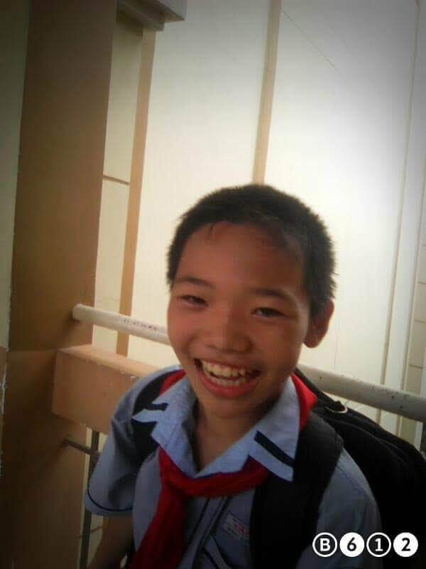
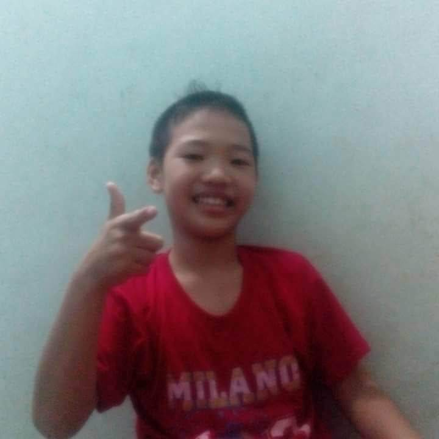
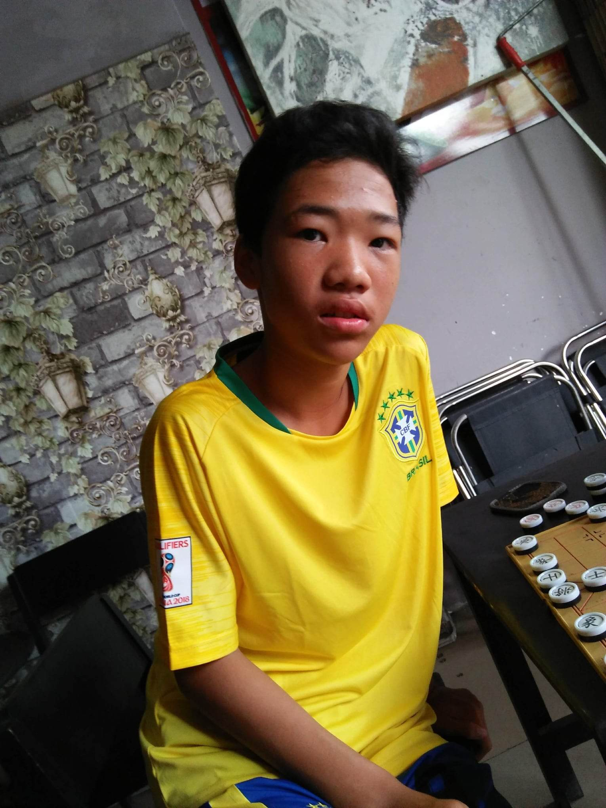
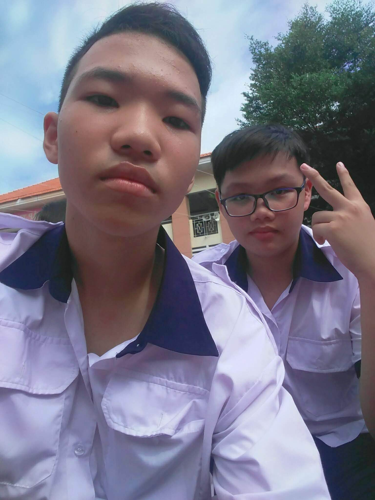

About me

I am student at Hutech university
- Fullname: Quang Tran
- Country: VietNam
Education
- Binh Tan Highschool
- Hutech University
Scores
| Math | Physics | IT | ||
|---|---|---|---|---|
| Math 1 | Math 2 | |||
| 2019 | 7 | 0 | 6 | 10 |
| 2020 | 9 | 0 | 7 | 10 |
| 2021 | 10 | 0 | 8 | 10 |
Social Media
Youtube: Quangcst
Facebook: Trần Minh Quang
My Pictures

Lớp 6
Vừa ra trường tiểu học Tân Tạo với 5 năm liền học sinh giỏi vào nhập học ở trường thcs Tân Tạo

Lớp 7
Lớp 6 lớp 7 toàn trốn đi bộ 1km chơi net nên da đen với nhỏ con ốm yếu

Lớp 9
Đây là năm mình đạt được giải thưởng đầu tiên đó chính là giải nhì cấp trường bộ môn cờ tướng được 200k và từ đây mình đã nhận ra tầm quan trọng của môn toán và yêu thích môn toán hơn

Lớp 10
Đây là năm đầu tiên mình thi học kỳ được 10đ toán mình khá là bất ngờ và càng yêu thích môn toán hơn nữa

Lớp 11
Sau học kỳ 2 lớp 10 trải qua cơn dịch thì năm nay là năm đầu tiên mình được gọi tham gia vào đội tuyển học sinh giỏi toán của trường. Nhóm mình có 5 bạn tham gia nhưng chỉ có 3 bạn được đi trong đó có mình. Sau đợt đi thi cụm 2 bạn kia 1 bạn giải nhì 1 bạn giải ba còn mình ko có giải gì cả. Mình đã có chút buồn và nghi ngờ bản thân mình thật sự có giỏi không.
Lớp 11
Nhưng rồi nhờ những lời động viên từ bạn bè và thầy cô mình đã tiếp tục theo đuổi và giành được huy chương đồng cuộc thi Olympic toán cấp thành phố tháng 4 năm 2021 đó là lần đầu tiên mình được cầm trên tay một chiếc huy chương mình đã cảm thấy rất vui và hạnh phúc và đồng thời mình cũng lấy lại được sự tự tin trong môn toán. Đây có lẻ là năm bùng nổ nhất của mình
Lớp 12
Sau năm 11 là những trận dịch liên hoàn bọn mình phải học online hết học kỳ 1. Học kỳ 2 trường lại tiếp tục ôn luyện cho các bạn đi thi tuyển năm đó có 2 cuộc thi là máy tính cầm tay casio cấp thành phố và cuộc thi học sinh giỏi cấp thành phố. Mình may mắn nhận đựợc giải ba ở cuộc thi máy tính cầm tay casio và kết thúc năm 12 với số điểm thi chỉ vỏn vẹn 25,1đ